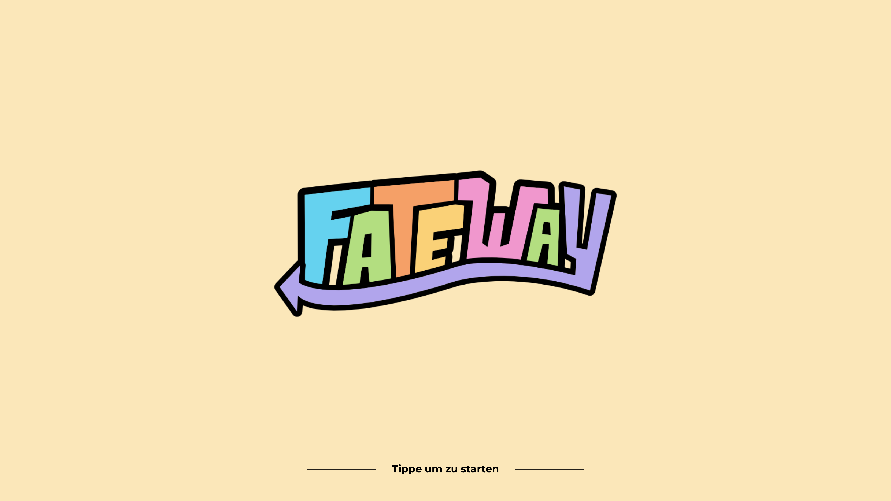
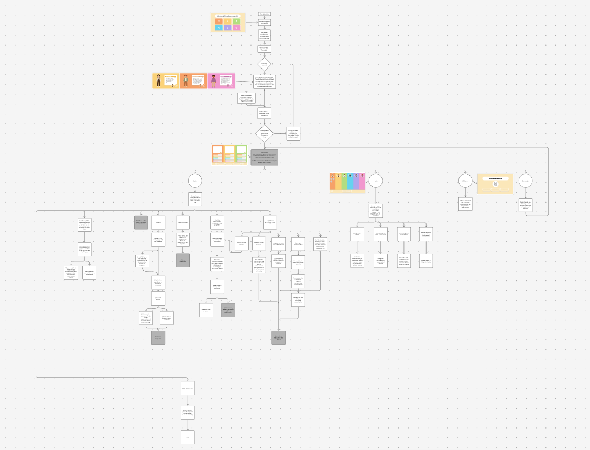
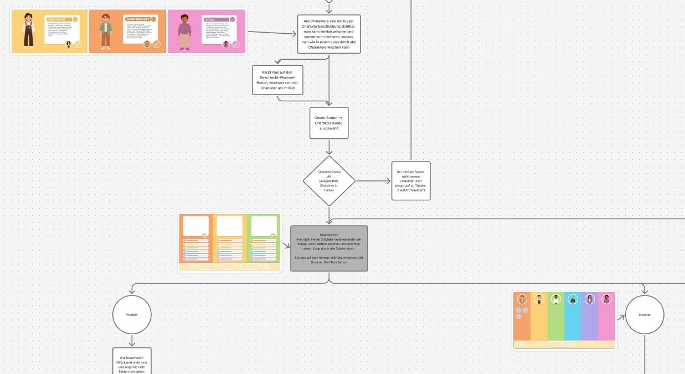
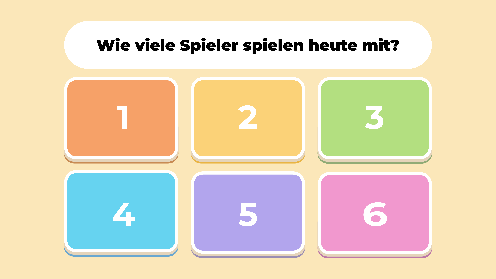
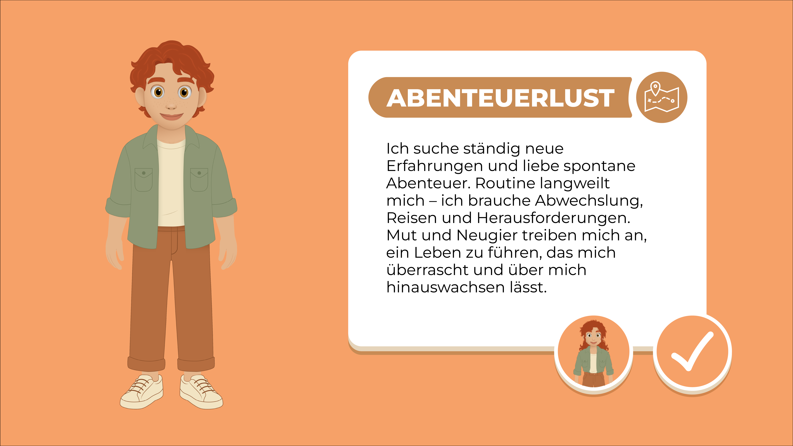
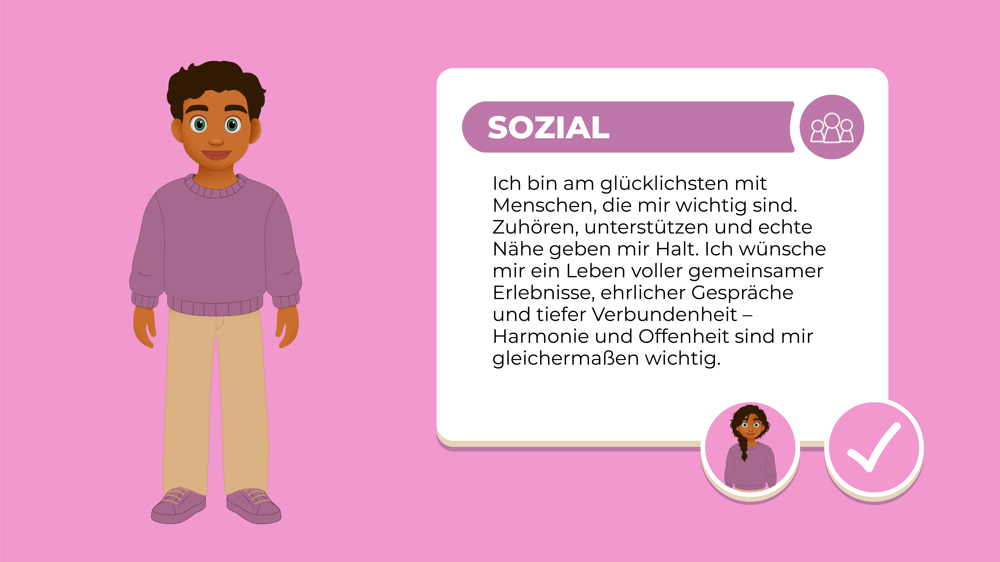
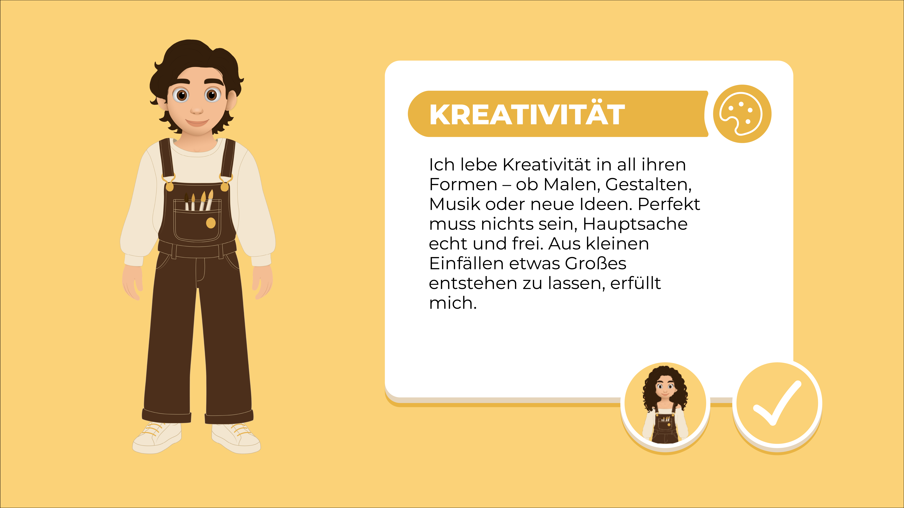
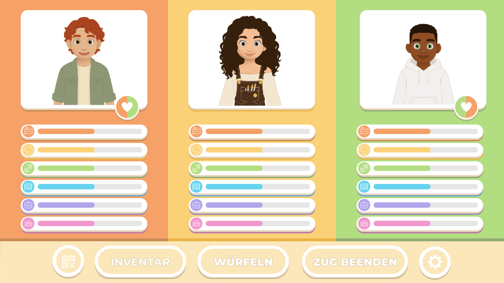
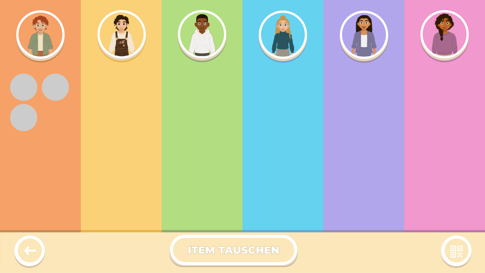

Fateway ist ein hybrides Brettspiel, das im Rahmen eines Semester-Gruppenprojekts entwickelt wurde. Das Konzept verbindet ein klassisches Spielbrett und physische Spielkarten mit einer digitalen App, wodurch analoge und digitale Spielmechaniken miteinander verschmelzen. Meine Hauptaufgabe im Projekt lag im Bereich UX- und UI-Design der App. Das Interface sowie die User Experience wurden in Figma und Adobe Illustrator gestaltet und anschließend in Unity umgesetzt. Die Spielregeln, Mechaniken und den allgemeinen Spielablauf haben wir gemeinsam im Team entwickelt und laufend getestet. Ein zentrales Feature des Spiels ist die Verbindung zwischen Brettspiel und App: Spielkarten und Elemente auf dem Spielbrett können mittels QR-Codes eingescannt werden, wodurch Ereignisse, Informationen oder Spielaktionen direkt in der App ausgelöst werden. Das Ergebnis des Projekts war ein vollständig spielbarer Prototyp, der die Möglichkeiten hybrider Spielerlebnisse demonstriert und zeigt, wie digitale Technologien klassische Brettspiele sinnvoll erweitern können.








